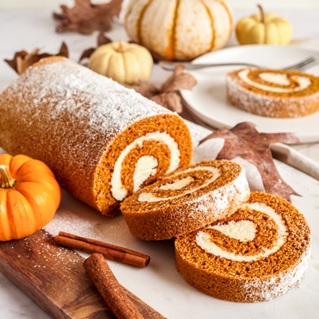

Pumpkin Roll

Description
Try this pumpkin roll recipe for a standout holiday dessert! A moist,
spiced pumpkin sheet cake is spread with a vanilla cream cheese filling,
then rolled up and dusted with powdered sugar for an after-dinner treat
that's both elegant and delicious.
You'll fall in love with this pumpkin roll, the cozy autumnal dessert
you'll want to make all season long.
Ingredients
Cake
- eggs
- sugar
- pumpkin puree
- cinnamon
- all-purpose flour
- baking soda
Filling
- cream cheese
- confectioners' sugar
- butter
- vanilla extract
Steps
-
Bake the Cake: Mix the eggs, sugar, pumpkin, and cinnamon in a bowl. Mix
the flour and baking soda in a separate bowl, then add it to the egg
mixture. Blend the batter until smooth. Spread the batter in a prepared
jelly roll pan. Bake in a preheated oven until the cake springs back
when touched.
-
Roll the Cake: Invert the cake onto a cotton tea towel. Let the cake
cool for about five minutes. Roll the cake up in the towel jelly-roll
style. Place the cake seam-side down and allow it to finish cooling.
-
Make the Filling: Beat the cream cheese, confectioners' sugar, butter,
and vanilla in a mixing bowl until smooth.
-
Roll the Cake Again: When the cake is cool, unroll it and evenly spread
with the cream cheese mixture. Roll the cake up again without the towel.
Dust with confectioners' sugar before serving.